It is difficult to take good pictures without having a solid understanding of ISO, Shutter Speed and Aperture – the Three Kings of Photography, also known as the “Exposure Triangle”. While most new DSLRs have “Auto” modes that automatically pick the right shutter speed, aperture and even ISO for your exposure, using an Auto mode puts limits on what you can achieve with your camera. In many cases, the camera has to guess what the right exposure should be by evaluating the amount of light that passes through the lens. Thoroughly understanding how ISO, shutter speed and aperture work together allows photographers to fully take charge of the situation by manually controlling the camera. Knowing how to adjust the settings of the camera when needed, helps to get the best out of your camera and push it to its limits to take great photographs.
Let’s quickly review a summary of the Exposure Triangle as a refresher:
ISO – the level of sensitivity of your camera to available light. It is typically measured in numbers, a lower number representing lower sensitivity to available light, while higher numbers mean more sensitivity. More sensitivity comes at the cost though, as the ISO increases, so does the grain/noise in the images. Examples of ISO: 100, 200, 400, 800, 1600.
Shutter Speed – the length of time a camera shutter is open to expose light into the camera sensor. Shutter speeds are typically measured in fractions of a second, when they are under a second. Slow shutter speeds allow more light into the camera sensor and are used for low-light and night photography, while fast shutter speeds help to freeze motion. Examples of shutter speeds: 1/15 (1/15th of a second), 1/30, 1/60, 1/125.
Aperture – a hole within a lens, through which light travels into the camera body. The larger the hole, the more light passes to the camera sensor. Aperture also controls the depth of field, which is the portion of a scene that appears to be sharp. If the aperture is very small, the depth of field is large, while if the aperture is large, the depth of field is small. In photography, aperture is typically expressed in “f” numbers (also known as “focal ratio”, since the f-number is the ratio of the diameter of the lens aperture to the length of the lens). Examples of f-numbers are: f/1.4, f/2.0, f/2.8, f/4.0, f/5.6, f/8.0.
It is challenging to take good pictures without a good understanding of how ISO works and what it does. Camera ISO is one of the three pillars of photography (the other two being Aperture and Shutter Speed) and every photographer should thoroughly understand it, to get the most out of their equipment. Since this article is for beginners in photography, I will try to explain ISO as simple as I can.
Before we go any further, you should first understand how DSLR cameras work.
In very basic terms, ISO is the level of sensitivity of your camera to available light. The lower the ISO number, the less sensitive it is to the light, while a higher ISO number increases the sensitivity of your camera. The component within your camera that can change sensitivity is called “image sensor” or simply “sensor”. It is the most important (and most expensive) part of a camera and it is responsible for gathering light and transforming it into an image. With increased sensitivity, your camera sensor can capture images in low-light environments without having to use a flash. But higher sensitivity comes at an expense – it adds grain or “noise” to the pictures.
Take a look at the following picture (click to open a larger version):
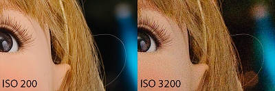
The difference is clear – the image on the right hand side at ISO 3200 has a lot more noise in it, than the one on the left at ISO 200.
Every camera has something called “Base ISO“, which is typically the lowest ISO number of the sensor that can produce the highest image quality, without adding noise to the picture. On most of the new Nikon cameras such as Nikon D5100, the base ISO is typically 200, while most Canon digital cameras have the base ISO of 100. So, optimally, you should always try to stick to the base ISO to get the highest image quality. However, it is not always possible to do so, especially when working in low-light conditions.
Typically, ISO numbers start from 100-200 (Base ISO) and increment in value in geometric progression (power of two). So, the ISO sequence is: 100, 200, 400, 800, 1600, 3200, 6400 and etc. The important thing to understand, is that each step between the numbers effectively doubles the sensitivity of the sensor. So, ISO 200 is twice more sensitive than ISO 100, while ISO 400 is twice more sensitive than ISO 200. This makes ISO 400 four times more sensitive to light than ISO 100, and ISO 1600 sixteen times more sensitive to light than ISO 100, so on and so forth. What does it mean when a sensor is sixteen times more sensitive to light? It means that it needs sixteen times less time to capture an image!
ISO Speed Example:
ISO 100 – 1 second
ISO 200 – 1/2 of a second
ISO 400 – 1/4 of a second
ISO 800 – 1/8 of a second
ISO 1600 – 1/16 of a second
ISO 3200 – 1/32 of a second
In the above ISO Speed Example, if your camera sensor needed exactly 1 second to capture a scene at ISO 100, simply by switching to ISO 800, you can capture the same scene at 1/8th of a second or at 125 milliseconds! That can mean a world of difference in photography, since it can help to freeze motion.
Take a look at this picture:
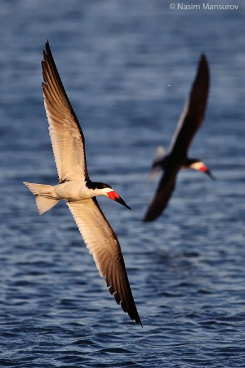
I captured these Black Skimmers at 1/2000th of a second at ISO 800. My camera sensor only needed 1/2000th of a second to fully capture this photograph. Now what would have happened if I had ISO 100 on my camera instead? My sensor would have needed 8 times more time to capture the same scene, which is 1/250th of a second. At that speed, I would have introduced motion blur into my picture, because the birds were moving faster than that. In short, I would have ruined the picture.
As I’ve said above, you should always try to stick to the lowest ISO (base ISO) of your camera, which is typically ISO 100 or 200, whenever possible. When there is plenty of light, you should always use the lowest ISO, to retain the most detail and to have the highest image quality. There are some cases where you might want to use low ISO in dim or dark environments – for example, if you have your camera mounted on a tripod or sitting on a flat surface. In that case, bear in mind that your camera will most likely need more time to capture the scene and anything that is moving is probably going to look like a ghost.
Just kidding, of course! That’s my lovely nephew being the subject of my long exposure test. I set the camera to the lowest ISO to retain the detail, which also resulted in a long exposure of 5 seconds. My nephew sat still, while my friend stepped in for a brief moment to introduce the ghost :)
You should increase the ISO when there is not enough light for the camera to be able to quickly capture an image. Anytime I shoot indoors without a flash, I set my ISO to a higher number to be able to capture the moment without introducing blur to the image. Other cases where you might want to increase ISO are when you need to get ultra-fast shots, like the bird picture I posted above. But before increasing the ISO, you should think if it is OK for you to introduce noise to the image.
On many of the newer DSLRs, there is a setting for “Auto ISO”, which works great in low-light environments. The beauty of this setting, is that you can set the maximum ISO to a certain number, so when the ISO is automatically increased based on the amount of light,
Shutter Speed is one of the three pillars of photography, the other two being ISO and Aperture. Shutter speed is where the other side of the magic happens – it is responsible for creating dramatic effects by either freezing action or blurring motion. In this article, I will try to explain everything I know about shutter speed in very simple language.
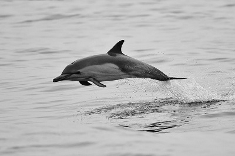
Before reading this article, I highly recommend reading about what a DSLR is and what it consists of. Simply put, a camera shutter is a curtain in front of the camera sensor that stays closed until the camera fires. When the camera fires, the shutter opens and fully exposes the camera sensor to the light that passes through the lens aperture. After the sensor is done collecting the light, the shutter closes immediately, stopping the light from hitting the sensor. The button that fires the camera is also called “shutter” or “shutter button”, because it triggers the shutter to open and close.
Shutter speed, also known as “exposure time”, stands for the length of time a camera shutter is open to expose light into the camera sensor. If the shutter speed is fast, it can help to freeze action completely, as seen in the above photo of the dolphin. If the shutter speed is slow, it can create an effect called “motion blur”, where moving objects appear blurred along the direction of the motion. This effect is used quite a bit in advertisements of cars and motorbikes, where a sense of speed and motion is communicated to the viewer by intentionally blurring the moving wheels.
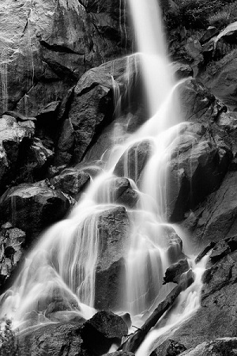
Motion can also be frozen to an extent with a camera flash, even at low shutter speeds. Take a look at this example:
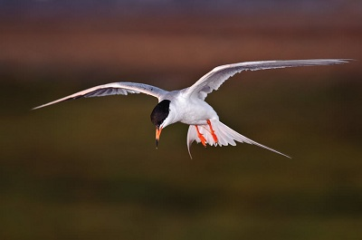
t was getting dark and even after increasing the sensor sensitivity to ISO 800, the camera still needed at least 1/250th of a second to properly expose this bird. If I had shot the bird at that speed, the bird would have turned out to be blurry, since it moved faster than 1/250th of a second. I used an external flash and fired the camera at 1/250th of a second and as you can see, it helped me to freeze motion, despite having a low shutter speed for a bird in flight.
All of the above is achieved by simply controlling the shutter speed. In summary, high shutter speeds freeze action, while low shutter speeds create an effect of motion.
Shutter speeds are typically measured in fractions of a second, when they are under a second. For example 1/4 means a quarter of a second, while 1/250 means one two-hundred-and-fiftieth of a second or four milliseconds. Most modern DSLRs can handle shutter speeds of up to 1/4000th of a second, while some can handle much higher speeds of 1/8000th of a second and faster. The longest shutter speed on most DSLRs is typically 30 seconds (without using external remote triggers).
Fast shutter speed is typically whatever it takes to freeze action. For me, it is typically above 1/500th of a second for general photography and above 1/1000th of a second for bird photography.
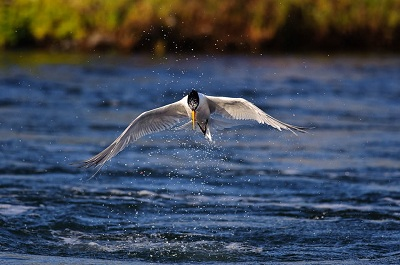
Slow shutter speed is considered to be the slowest shutter speed that you can handle without introducing camera shake. Some of the newer Nikon lenses such as the Nikon 70-200mm VR II have special “vibration reduction” technologies within the lens that can handle shutter speeds of up to 1/10th of a second (depending on photographer’s technique), hand-held!
How about long shutter speed? Long shutter speeds are typically above 1 second, when you have to use a tripod to get acceptably sharp images (for low-light/night photography or to capture movement).
Most cameras handle shutter speeds automatically through in-camera metering. When the camera is set to “Auto” mode, both shutter speed and aperture are automatically selected by the camera. When you shoot in “Aperture Priority” mode, you set the lens aperture, while the camera automatically sets the shutter speed.
There are two ways to manually set the shutter speed:
a) By setting the camera to “Shutter
Priority” mode, where you set the shutter speed and the camera
automatically selects the aperture.
b) By setting the camera to “Manual”
mode, where you set both shutter speed and aperture manually.
I recommend letting the camera select the correct shutter speed for you. I personally shoot in “Aperture Priority” mode 99% of the time and I let my camera calculate the shutter speed for me.
Do you know how to find out what your camera shutter speed is set to? It is typically very easy to find the shutter speed. On Nikon DSLRs that have a top panel, the shutter speed is typically located on the top left corner:
Aperture is one of the three pillars of photography, the other two being ISO and Shutter Speed. Without a doubt, it is the most talked about subject, because aperture either adds a dimension to a photograph by blurring the background, or magically brings everything in focus. In this article, I will try to explain everything I know about aperture in very simple language.
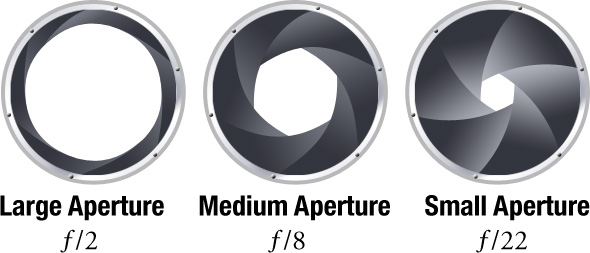
Simply put, aperture is a hole within a lens, through which light travels into the camera body. It is easier to understand the concept if you just think about our eyes. Every camera that we know of today is designed like human eyes. The cornea in our eyes is like the front element of a lens – it gathers all external light, then bends it and passes it to the iris. Depending on the amount of light, the iris can either expand or shrink, controlling the size of the pupil, which is a hole that lets the light pass further into the eye. The pupil is essentially what we refer to as aperture in photography. The amount of light that enters the retina (which works just like the camera sensor), is limited to the size of the pupil – the larger the pupil, the more light enters the retina.
So, the easiest way to remember aperture, is by associating it with your pupil. Large pupil size equals large aperture, while small pupil size equals small aperture.
The iris of the lens that controls the size (diameter) of the aperture is called “diaphragm” in optics. The sole purpose of the diaphragm is to block or stop all light, with the exception of the light that goes through the aperture. In photography, aperture is expressed in f-numbers (for example f/5.6). These f-numbers that are known as “f-stops” are a way of describing the size of the aperture, or how open or closed the aperture is. A smaller f-stop means a larger aperture, while a larger f-stop means a smaller aperture. Most people find this awkward, since we are used to having larger numbers represent larger values, but not in this case. For example, f/1.4 is larger than f/2.0 and much larger than f/8.0.
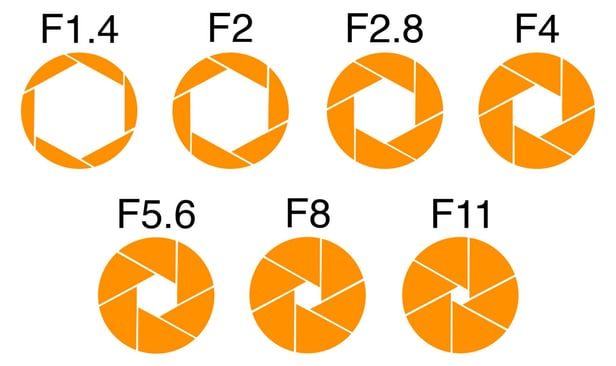
One important thing to remember here, the size of the aperture has a direct impact on the depth of field, which is the area of the image that appears sharp. A large f-number such as f/32, (which means a smaller aperture) will bring all foreground and background objects in focus, while a small f-number such as f/1.4 will isolate the foreground from the background by making the foreground objects sharp and the background blurry.
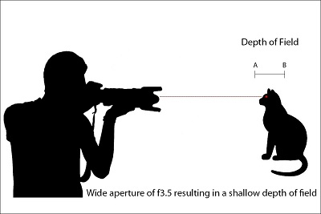
Every lens has a limit on how large or how small the aperture can get. If you take a look at the specifications of your lens, it should say what the maximum (lowest f-number) and minimum apertures (highest f-number) of your lens are. The maximum aperture of the lens is much more important than the minimum, because it shows the speed of the lens. A lens that has an aperture of f/1.2 or f/1.4 as the maximum aperture is considered to be a fast lens, because it can pass through more light than, for example, a lens with a maximum aperture of f/4.0. That’s why lenses with large apertures are better suited for low light photography.
The minimum aperture is not that important, because almost all modern lenses can provide at least f/16 as the minimum aperture, which is typically more than enough for everyday photography needs.
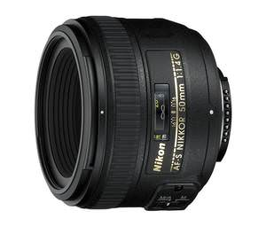
There are two types of lenses: “fixed” (also known as “prime”) and “zoom”. While zoom lenses give you the flexibility to zoom in and out (most point and shoot cameras have zoom lenses) without having to move closer or away from the subject, fixed or prime lenses only have one focal length. Due to the complexity of optical design for zoom lenses, many of the consumer lenses have variable apertures. What it means, is that when you are fully zoomed out, the aperture is one number, while zooming in will increase the f-number to a higher number. For example, the Nikon 18-200mm lens has a variable maximum aperture of f/3.5-f/5.6. When zoomed fully out at 18mm, the lens has an aperture of f/3.5, while when fully zoomed in at 200mm, the lens has an aperture of f/5.6. The heavy, professional zoom lenses, on the other hand, typically have fixed apertures. For example, the Nikon 70-200mm f/2.8 lens has the same maximum aperture of f/2.8 at all focal lengths between 70mm and 200mm.
Why is this important? Because larger maximum aperture means that the lens can pass through more light, and hence, your camera can capture images faster in low-light situations. Having a larger maximum aperture also means better ability to isolate subjects from the background.
To have a good understanding about exposure and how shutter speed, aperture and ISO affect it, we need to understand what happens within the camera when a picture is taken.
As you point your camera at a subject and press the shutter button, the subject gets into your camera lens in a form of light. If your subject is well-lit, there is plenty of light that travels into the lens, whereas if you are taking a picture in a dim environment, there is not much light that travels into the lens. When the light enters the lens, it passes through various optical elements made of glass, then goes through the lens “Aperture” (a hole inside the lens that can be changed from small to large). Once the light goes past the lens aperture, it then hits the shutter curtain, which is like a window that is closed at all times, but opens when needed. The shutter then opens in a matter of milliseconds, letting the light hit the camera sensor for a specified amount of time. This specified amount of time is called “Shutter Speed” and it can be extremely short (up to 1/8000th of a second) or long (up to 30 seconds). The sensor then gathers the light, based on a pre-defined sensitivity, also known as “ISO”. Then the shutter closes and the light is completely blocked from reaching the camera sensor.
To get the image properly exposed, so that it is not too bright or too dark, Shutter Speed, Aperture and ISO need to play together. When lots of light enters the lens (let’s say it is broad daylight with plenty of sunlight), what happens when the lens aperture/hole is very small? Lots of light gets blocked. This means that the camera sensor would need more time to collect the light. What needs to happen for the sensor to collect the right amount of light? That’s right, the shutter needs to stay open longer. So, with a very small lens aperture, we would need more time, i.e. longer shutter speed for the sensor to gather enough light to produce a properly exposed image.
Now what would happen if the lens aperture/hole was very big? Obviously, a lot more light would hit the sensor, so we would need a much shorter shutter speed for the image to get properly exposed. If the shutter speed is too low, the sensor would get a lot more light than it needs and the light would start “burning” or “overexposing” the image, just like magnifying glass starts burning paper on a sunny day. The overexposed area of the image will look very bright or pure white. In contrast, if the shutter speed is way too high, then the sensor is not able to gather enough light and the image would appear “underexposed” or too dark.
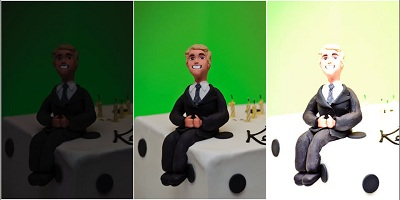
Let’s do a real-life example. Grab your camera and set your camera mode to “Aperture Priority“. Set your lens aperture on your camera to the lowest possible number the lens will allow, such as f/1.4 if you have a fast lens or f/3.5 on slower lenses. Set your ISO to 200 and make sure that “Auto ISO” is turned off. Now point your camera at an object that is NOT a light source (for example a picture on the wall) then half-press the shutter button to acquire correct focus and let the camera determine the optimal exposure settings. Do not move your camera and keep pointing at the same subject! If you look inside the camera viewfinder now or on the back LCD, you should see several numbers. One of the numbers will show your aperture, which should be the same number as what you set your aperture to, then it should show your shutter speed, which should be a number such as “125” (means 1/125th of a second) and “200”, which is your sensor ISO.
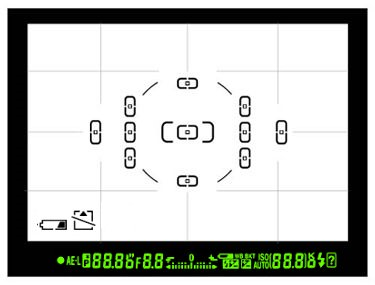
Write down these numbers on a piece of paper and then take a picture. When the picture comes up on the rear LCD of your camera, it should be properly exposed. It might be very blurry, but it should be properly exposed, which means not too bright or too dark. Let’s say the settings you wrote down are 3.5 (aperture), 125 (shutter speed) and 200 (ISO). Now change your camera mode to “Manual Mode“. Manually set your aperture to the same number as you wrote down, which should be the lowest number your camera lens will allow (in our example it is 3.5). Then set your shutter speed to the number you wrote down (in our example it is 125) and keep your ISO the same – 200. Make sure your lighting conditions in the room stay the same. Point at the same subject and take another picture. Your results should look very similar to the picture you took earlier, except this time, you are manually setting your camera shutter speed, instead of letting your camera make the guess. Now, let’s block the amount of light that is passing through the lens by increasing the aperture and see what happens. Increase your aperture to a larger number such as “8.0” and keep the rest of the settings the same. Point at the same subject and take another picture. What happened? Your image is too dark or underexposed now! Why did this happen? Because you blocked a portion of the light that hits the sensor and did not change the shutter speed. Because of this, the camera sensor did not have enough time to gather the light and therefore the image is underexposed. Had you decreased the shutter speed to a smaller number, this would not have happened. Understand the relationship?
Now change your aperture back to what it was before (smallest number), but this time, decrease your shutter speed to a much smaller number. In my example, I will set my shutter speed to 4 (quarter of a second) from 125. Take another picture. Now your image should be overexposed and some parts of the image should appear too bright. What happened this time? You let your lens pass through all the light it can gather without blocking it, then you let your sensor gather more light then it needs by decreasing the shutter speed. This is a very basic explanation of how aperture and shutter speed play together.
So, when does ISO come into play and what does it do? So far, we kept the ISO at the same number (200) and didn’t change it. Remember, ISO means sensor sensitivity. Lower numbers mean lower sensitivity, while higher numbers mean higher sensitivity. If you were to change your ISO from 200 to 400, you would be making the sensor twice more sensitive to light. In the above example, at aperture of f/3.5, shutter speed of 1/125th of a second and ISO 200, if you were to increase the ISO to 400, you would need twice less time to properly expose the image. This means that you could set your shutter speed to 1/250th of a second and your image would still come out properly exposed. Try it – set your aperture to the same number you wrote down earlier, multiply your shutter speed by two and set it to that number, then change your ISO to 400. It should look the same as the first image you took earlier. If you were to increase the ISO to 800, you would need to again double your last shutter speed from 1/250 to 1/500.
As you can see, increasing ISO from 200 to 800 will allow you to shoot at higher shutter speeds and in this example increase it from 1/125th of a second to 1/500th of a second, which is plenty of speed to freeze motion. However, increasing ISO comes at a cost – the higher the ISO, the more noise or grain it will add to the picture.
Basically, this is how the Three Kings work together to create an exposure. I highly recommend practicing with your camera more to see the effects of changing aperture, shutter speed and ISO.
As I pointed out in my “Understanding Digital Camera Modes” article, I recommend using “Aperture Priority” mode for beginners (although any other mode works equally well, as long as you know what you are doing). In this mode, you set your lens aperture, while the camera automatically guesses what the right shutter speed should be. This way, you can control the depth of field in your images by changing the aperture (depth of field also depends on other factors such as camera to subject distance and focal length). There is absolutely nothing wrong with using “Auto” or “Program” modes, especially considering the fact that most modern DSLRs give the photographer pretty good control by allowing to override the shutter speed and aperture in those modes. But most people get lazy and end up using the Auto/Program modes without understanding what happens inside the camera, so I highly recommend to learn how to shoot in all camera modes.
If your camera is equipped with an “Auto ISO” feature (known as “ISO Sensitivity Auto Control” on Nikon bodies), you should enable it, so that the camera automatically guesses what the right ISO should be in different lighting conditions. Auto ISO is worry-free and it works great for most lighting conditions! Set your “Minimum ISO/ISO Sensitivity” to 100 on Canon cameras and 200 on latest Nikon cameras, then set your “Maximum ISO/Maximum Sensitivity” to 800 or 1600 (depending on how much noise you consider acceptable). Set the “Minimum Shutter Speed” to 1/100th of a second if you have a short lens below 100mm and to a higher number if you have a long lens. Basically, the camera will watch your shutter speed and if it drops below the “Minimum Shutter Speed”, it will automatically increase the ISO to a higher number, to try to keep the shutter speed above this setting. The general rule is to set your shutter speed to the largest focal length of your lens. For example, if you have a Nikon 70-300mm f/4.5-5.6 zoom lens, set your minimum shutter speed to 1/300th of a second. Why? Because as the focal length of the lens increases, so do the chances of having a camera shake that will render your images blurry. But this rule doesn’t always work, because there are other factors that all play a role in whether you will introduce camera shake or not. Having shaky hands and improperly holding the camera might cause extra camera shake, while having a lens with Vibration Reduction (also known as Image Stabilization) might actually help to decrease camera shake. Either way, play with the “Minimum Shutter Speed” option and try changing numbers and see what works for you.
If you do not have an “Auto ISO” option in your camera, then start out with the lowest ISO and see what shutter speeds you are getting. Keep on increasing the ISO until you get to an acceptable shutter speed.
Another great feature of all modern DSLRs, is the ability to control the exposure by using the “exposure compensation” feature. Except for manual mode, exposure compensation works great for all camera modes. Whether you are shooting in Aperture Priority, Shutter Priority or Auto/Program modes, dialing the exposure compensation up or down (plus to minus) will allow you to regulate the exposure and override the camera-guessed settings. If you find your image (or parts of your image) underexposed or overexposed, you can use exposure compensation to adjust the exposure without manually changing the aperture or shutter speed.
It really depends on what you are taking a picture of. Sometimes it is not possible to use your built-in camera flash in a low-light environment. For example, if your subject is standing far away, you might not be able to reach the subject with your flash. In that case, the only solution is to either come closer to the subject, or turn off flash completely and use a higher ISO. Obviously, for landscape or architectural photography, you should always turn off your flash, because it will not be able to brighten up the entire scene. So in a low-light situation, the only two options are to either increase the ISO so that you can shoot hand-held, or set the camera to the lowest ISO and use a tripod.
Have you ever heard of a term “full stop” in photography? Each of the increments between ISO numbers is called “a full stop” in photography. For example, there is one full stop between ISO 100 and ISO 200, while there are two full stops between ISO 100 and ISO 400. How many stops are there between ISO 100 and ISO 1600? That’s right, four full stops of light. Why do you need to know about stops? Because you might see it in photography literature or photographer might mention stops and it is sometimes confusing to understand what it truly means. But the term “full stop” does not just apply to ISOs – the same concept is there for shutter speed and aperture. It is easy to remember full stops between shutter speeds, because you just start from one and divide the number by two: 1, 1/2, 1/4, 1/8, 1/15, 1/30, 1/60, 1/125, 1/250, 1/500, 1/1000, etc. Obviously, the numbers are rounded (starting from 1/15, which should be 1/16) to make it easy for photography. It is harder to memorize stops in apertures, because the numbers are computed differently: f/1, f/1.4, f/2, f/2.8, f/4, f/5.6, f/8, f/11, f/16, etc.
Let’s now go over what you could do in your camera to properly expose an image in different lighting conditions.
What should You do in low-light situations? Use Aperture-Priority mode, set your aperture to the lowest possible number. Be careful if you have a fast lens such as Nikon 50mm f/1.4, because setting aperture to the lowest number (f/1.4) will make the depth of field very shallow. Set your “Auto ISO” to “On” (if you have it) and make sure that the maximum ISO and minimum shutter speed are both defined, as shown in section 3. If after increasing your ISO you are still getting small shutter speeds (which means that you are in a very dim environment), your only other options are to either use a tripod or a flash. If you have moving subjects that need to be “frozen”, you will have to use flash.
What do You need to do to freeze action? First, you will need plenty of light. Freezing action during the broad daylight is easy, whereas it is extremely tough to do it in low-light situations. Assuming you have plenty of light, make sure that your aperture is set to the lowest number (again, be careful about depth of field), then set your “Auto ISO” to “On” (if you have it) and set your minimum shutter speed to a really high number such as 1/500th or 1/1000th of a second. For my bird photography, I try to keep shutter speeds at 1/1000th of a second and faster:
What settings do You need to change to create a motion blur effect? Turn off Auto ISO and set your ISO to the lowest number. If the shutter speed is too fast and you still cannot create motion blur, increase aperture to a higher number until the shutter speed drops to a low number below 1/100-1/50 of a second.
What do You do if You cannot get proper exposure? The image is either too dark or too bright. Make sure that you are not shooting in Manual Mode. Set your camera meter to “Evaluative” (Canon) or “Matrix” (Nikon). If it is already set and you are still getting improper exposure, it means that you are probably taking a picture where there is a big contrast between multiple objects (for example bright sky and dark mountains, or sun in the frame) – whatever you are trying to take a picture of is confusing the meter within your camera. If you still need to take a picture, set your camera meter to “Spot” and try to point your focus point to an area that is not too bright or too dark. That way you get the “sweet middle”.
How can You isolate my subject from the background and make the background (bokeh) look soft and smooth? Stand closer to your subject and use the smallest aperture on your lens. Some lenses can render background much better and smoother than others. If you do not like the bokeh on yours, consider getting a good portrait lens such as the Nikon 50mm f/1.4 or the Nikon 85mm f/1.4, which is considered to be the best lens when it comes to bokeh.
How can You decrease the amount of noise/grain in my images? Turn off “Auto ISO” and set your ISO to the base ISO of the camera (ISO 100 on Canon and ISO 200 on Nikon).